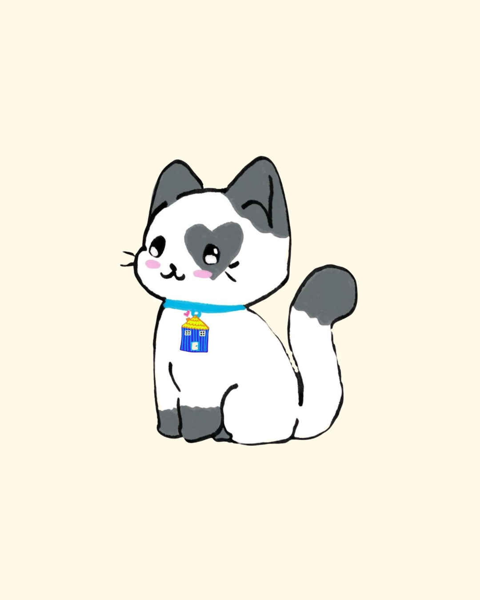
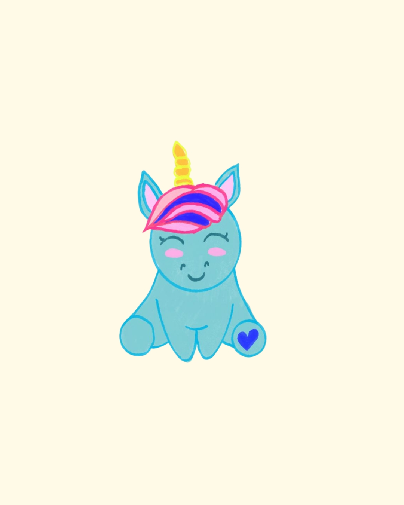
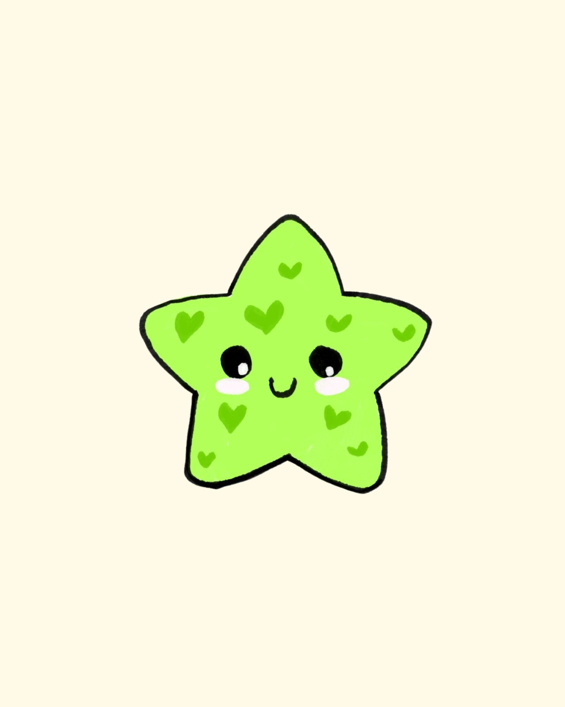
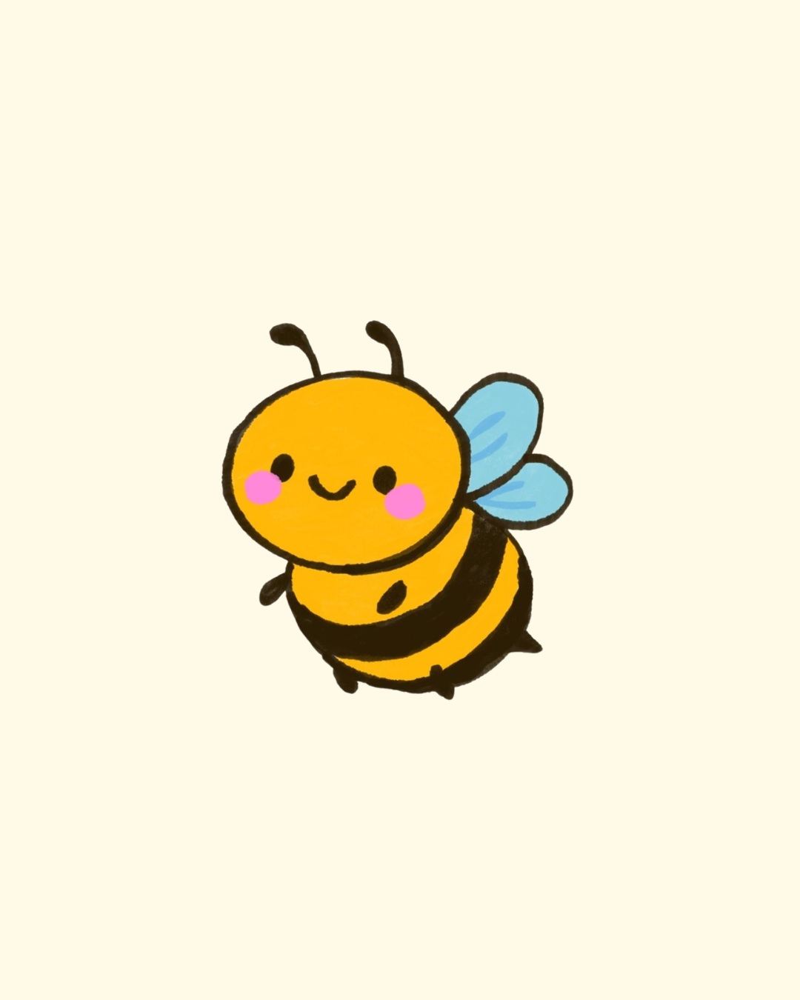
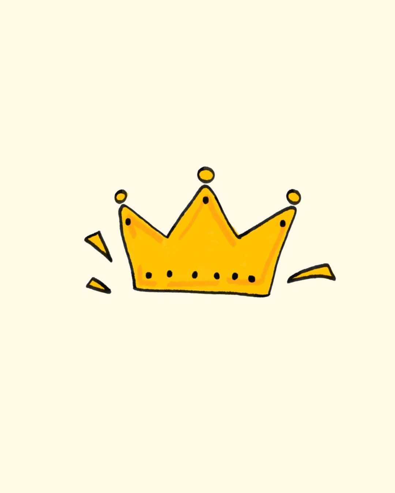

أنواع الجليسات المحترفات لدينا

الجليسة الاعتيادية
جليسة طفلكِ… بس مش عاديّة! هدفنا في كيدز هيفن المساهمة في صناعة جيل واعي، واثق، ومميز.
اضغط هنا لقراءة السيرة الذاتية (CV) كاملة...
نُعرفكِ اليوم على نورجان 👩🏻🍼 الحاضنة المثالية لتطوير مهارات طفلكِ بأمان وحب.
💼 الخبرة: أكثر من 5 سنوات في رعاية الأطفال وتطوير شخصياتهم بمختلف الأعمار.
🎨 الأنشطة والتطوير: تأسيس ممتع للأحرف والأرقام، تنمية مهارات التواصل، والتركيز على موهبة خاصة يختارها الأهل.
🎓 المؤهلات: ماجستير تربية طفل (الجامعة الهاشمية)، مدرب معتمد في تربية الطفل، ودبلوم إسعافات أولية.
💌 رسالة نورجان: "هدفي أخلي طفلك يشعر بالأمان، الحب، والثقة بكل لحظة.. ووعدي إلك أتعامل معاه كأنه قطعة من قلبي 🤍"

جليسة حديثي الولادة والرضع
الأسابيع الأولى من عمر طفلكِ هي الأجمل، لكنها الأكثر تعباً وقلة نوم وتحديات جديدة عليكي.
اضغط هنا لقراءة السيرة الذاتية (CV) كاملة...
عشان هيك وفرنالكم جليسات مخصصات لهي المرحلة بمؤهلات احترافية عالية:
📄 المهام والمسؤوليات:
- العناية الكاملة بالمولود الجديد (تغيير، تغذية، ومتابعة).
- تنظيم ساعات نوم البيبي ومساعدته على الاسترخاء.
- دعم الأم وتوفير وقت إلها عشان ترتاح وتتعافى براحة بال.
🎓 المؤهلات والخبرات:
- خبرة عملية ومثبتة في التعامل مع الرضع وحديثي الولادة.
- شهادة معتمدة في الإسعافات الأولية الخاصة بالرضع والتعامل مع الطوارئ (مثل الشرقة أو الغازات).
- طولة بال، هدوء تام، وحب كبير للأطفال.
🛡️ الضمان: رعاية آمنة مية بالمية تخليكي تطلعي أو تنامي وأنتِ متطمنة ومرتاحة!

جليسة أطفال التوحد
رعاية متخصصة مخصصة لأبطال طيف التوحد تمنحهم الأمان وتنمي مهاراتهم الاجتماعية والسلوكية برفق.
اضغط هنا لقراءة السيرة الذاتية (CV) كاملة...
🎓 المؤهلات العلمية: بكالوريوس (تربية خاصة / علم نفس / علاج وظيفي ونطق) + شهادة إسعافات أولية للأطفال.
🧠 المهارات والصفات الأساسية: الصبر الطويل، الثبات والهدوء التام أثناء الانهيارات الحسية ونوبات الغضب، الانتباه للمحفزات المزعجة (أصوات، إضاءة)، والالتزام التام بالروتين اليومي للطفل.
⭐ نقاط القوة الاحترافية: خبيرات في تطبيق الجداول البصرية، أنشطة التكامل الحسي، التواصل البديل (الصور والإشارات)، واستراتيجيات تعديل السلوك الحديثة (ABA).
📋 أبرز المهام اليومية: الرعاية المنزلية والمرافقة المدرسية، تنفيذ الأنشطة العلاجية والترفيهية المفيدة، المساعدة في الأكل والدراسة، وتهدئة الطفل عند التوتر مع توثيق تقرير سلوكي يومي للأهل.

جليسة ذوي الاحتياجات الخاصة
رعاية بمستوى حبّك.. سند لطفلكِ المميز وأمان لقلبكِ! أطفالنا يمتلكون عوالم مليئة بالتميز والتفاصيل.
اضغط هنا لقراءة السيرة الذاتية (CV) كاملة...
هم لا يحتاجون مجرد "رعاية عادية"، هم بحاجة لشخص يفهم احتياجهم، يحترم قدراتهم، ويكون السند الحقيقي لهم ولعائلاتهم.
📄 المهام والمسؤوليات:
- العناية الشاملة والمرافقة: دعم الطفل في تفاصيل يومه (البيت، المدرسة، أو الخروج) ومساعدته في تناول الطعام، الحركة، واللعب الهادف.
- تحفيز المهارات وتطبيق الخطط: تنفيذ الأنشطة والتمارين (الحركية، الإدراكية، أو السلوكية) الموصى بها من الأخصائيين لتطوير قدرات الطفل.
- الدعم النفسي والاحتواء: التعامل الذكي والهادئ مع لحظات الإحباط أو التوتر، ومساعدة الطفل على الشعور بالأمان والاستقرار.
- عينكِ الغائبة: مراقبة تطور الطفل، الانتباه للتفاصيل التي تريحه أو تزعجه، وتقديم تقرير يومي يطمنك على كل خطوة.
🎓 المؤهلات والخبرات:
- خلفية أكاديمية متخصصة: جليسات دارسات ومؤهلات في مجالات (التربية الخاصة، العلاج الوظيفي، أو علم النفس).
- شهادة إسعافات أولية معتمدة وجاهزية تامة للتعامل مع أي طوارئ صحية بكل ثقة وأمان.
🛡️ الضمان: رعاية آمنة مية بالمية تخليكي تطلعي، تداومي، أو ترتاحي وأنتِ متطمنة ومطمنة قلبك.

جليسة كبار السن
مرافقة حانية ورعاية صحية متكاملة لبركة بيوتنا من أمهاتنا وآبائنا في أعمارهم المتقدمة لراحة بالكم.
اضغط هنا لقراءة السيرة الذاتية (CV) كاملة...
عشان نضمن إلهم الراحة والأمان اللي بيستحقوها، وفرنالكم جليسات ومرافقين مخصصين بمؤهلات احترافية:
📋 المهام والمسؤوليات:
- العناية اليومية الشاملة: المساعدة في الحركة، النظافة الشخصية، وتناول الوجبات الغذائية المتوازنة والمناسبة لوضعهم الصحي.
- إدارة ومتابعة الأدوية: تنظيم مواعيد العلاجات والفحوصات الدورية (مثل قياس الضغط والسكري) بدقة عالية.
🎓 المؤهلات والخبرات:
- خبرة عملية ومثبتة في التعامل مع كبار السن ومراعاة التغيرات النفسية والجسدية المصاحبة للتقدم في العمر.
- شهادة معتمدة في الإسعافات الأولية والرعاية الصحية الأساسية، والقدرة على التعامل السريع والمحترف مع حالات الطوارئ.
🛡️ الضمان: رعاية آمنة ورحيمة مية بالمية، تخليكم تطلعوا على دوامكم أو تناموا وأنتوا مرتاحي البال.